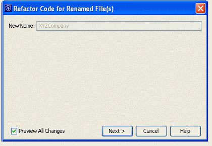
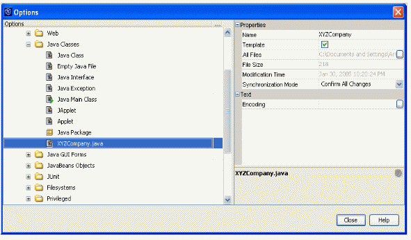

NetBeans には汎用的なクラステンプレートが付属しています。ところが、新しいクラスを作成しようとするたびに、汎用的な同じテキスト (会社の著作権の文や免責事項など) を入力し直したりカット＆ペーストしたりしていることに気づくことも少なくないと思います。
その情報をすでに含んでいる Java クラスを NetBeans に作成させることができれば、便利ではないでしょうか。実際、それはきわめて簡単に行えるのです。カスタマイズされたテンプレートがその解決策です。
会社の情報を含むカスタマイズされた Java クラステンプレートを作成する必要があるとします。その設定手順を次に示します (この手順はカスタマイズされた Java インタフェースやアプレットなどにも適用可能です)。それでは始めましょう
次のポップアップウィンドウで「次へ」をクリックします。

するとこのように、新しい Java クラステンプレートが表示されます。

/*
* __NAME__.java
*
* 作成日時: __DATE__, __TIME__
*
* Copyright(c) {YEAR!!!} XYZ Company, Inc. All Rights Reserved.
* このソフトウェアは XYZ 社の商用情報です。
*
*/
package Templates.Classes;
import org.xyz.whatever // 大部分のクラスに共通する
// インポートを配置します
import org.xyz.util.Logger; // ロギングライブラリなど。
/**
* {クラスの説明をここに挿入します}
*
* @version $Revision: 1.1.1.1 $
* @since Build {バージョンをここに挿入します} (MM YYYY)
* @author John Doe
* @author $Author: nbweb $, (このバージョン)
*/
public class XYZCompany
{
private static final String PVCS_ID = "@(#)$Header: /cvs/testwww/www/competition/win-with-netbeans/customize-java-template.html,v 1.1.1.1 2009/10/29 15:04:23 nbweb Exp $";
private static final Logger log = Logger.getLogger (__NAME__.class);
private static final String CLASS_NAME = "__NAME__";
/**
* __NAME__ の新しいインスタンスを作成します
*/
public XYZCompany ()
{
}
/**
* その他のメソッドをここに追加します ...
*
* @param value1
* @param value2
*
* @return
*
* @throw
*/
// public void helloWorld()
// throws whateverException
// {
// }
} // __NAME__ の終了